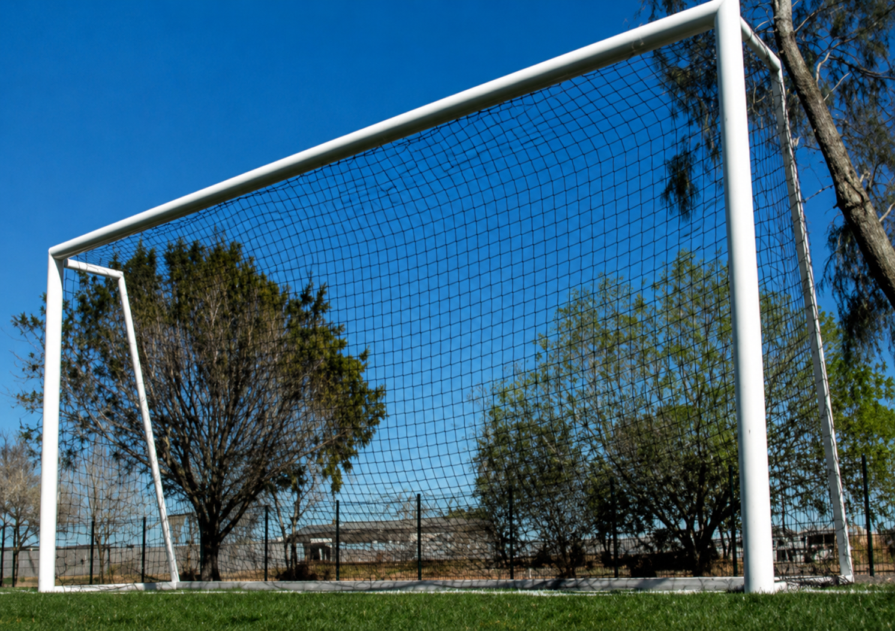
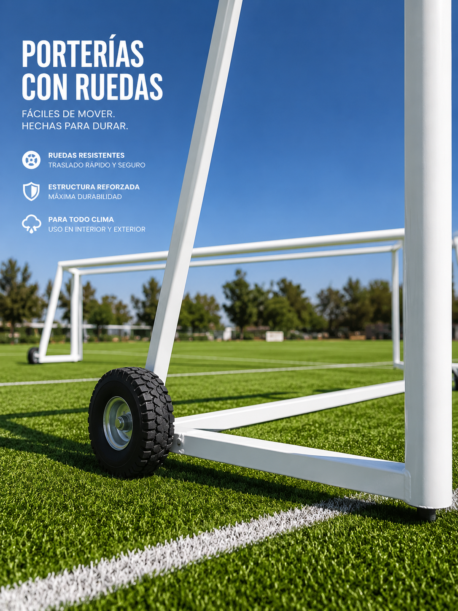
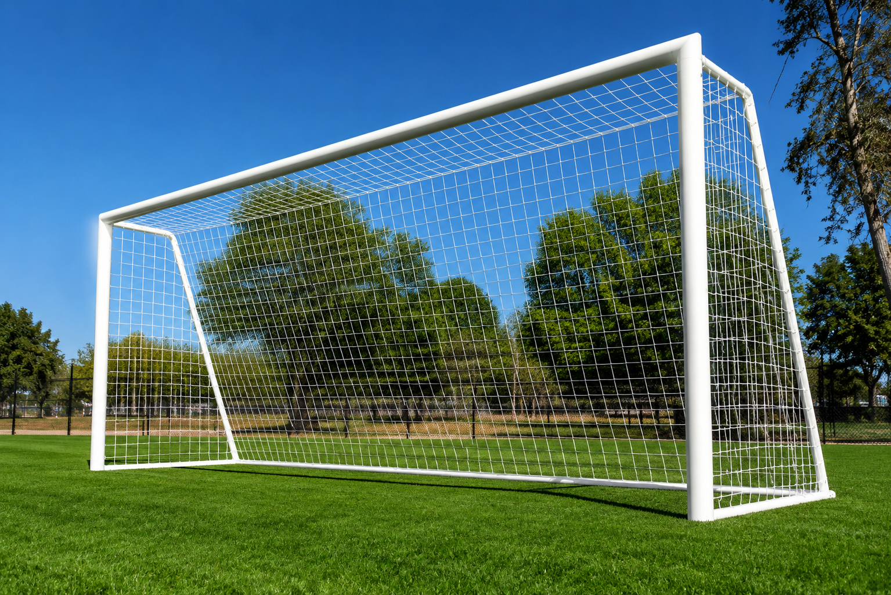
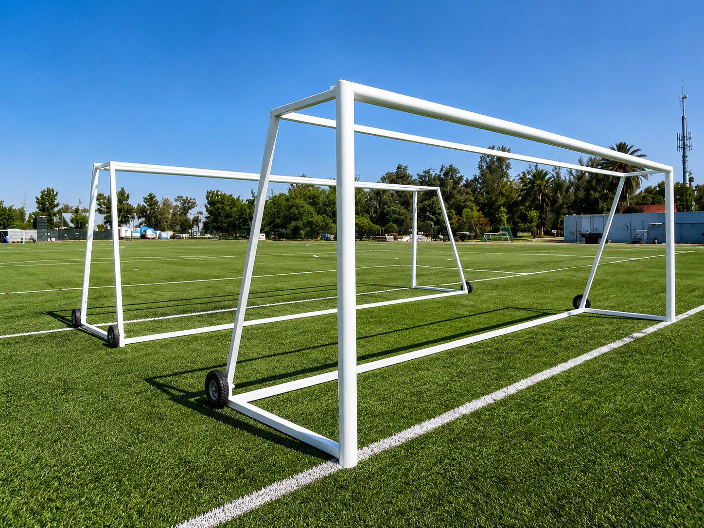

Fútbol 7
Portería oficial 2 x 6 m, ideal para canchas escolares, clubes, fraccionamientos y complejos deportivos.
Fabricamos porterías robustas y sólidas para fútbol 5, fútbol 7 y fútbol soccer. Modelos de línea, porterías móviles con ruedas de uso rudo y fabricación a medida para escuelas, clubes, canchas de renta, municipios y complejos deportivos.

La medida correcta depende del formato de juego, uso y nivel del proyecto. Te ayudamos a elegir la portería adecuada para que la cancha se vea proporcional y funcione bien.

Portería oficial 2 x 6 m, ideal para canchas escolares, clubes, fraccionamientos y complejos deportivos.
Porterías compactas para espacios reducidos, entrenamientos, academias y canchas de alto uso.

Porterías de mayor formato para colegios, universidades, clubes y proyectos deportivos profesionales.
Modelos oficiales, fijos, móviles y a medida, fabricados en estructura metálica apta para intemperie.
Cotiza tus porterías con medidas oficiales, acabados profesionales y opciones móviles o fijas según tu cancha.
Cuando una cancha es multiusos, escolar o de entrenamiento, la portería debe moverse sin batallar. Nuestras porterías móviles cuentan con llantas de uso rudo que facilitan el desplazamiento para retirarlas, acomodarlas o cambiar la dinámica de la cancha sin maltratar el equipo.
Las ruedas de uso rudo están pensadas para mover porterías robustas y sólidas con seguridad. La estructura conserva firmeza durante el juego y permite retirar la portería de la cancha cuando el espacio se usa para clases, torneos, mantenimiento o eventos.
Las llantas ayudan a mover la portería sin cargarla ni arrastrarla.
Ruedas sólidas para operación constante en escuelas, clubes y complejos.
Estructura fuerte, estable y lista para entrenamiento o juego formal.
Las porterías de fútbol 7 son una de las compras más versátiles para escuelas, clubes y complejos deportivos. Puedes dividir una cancha grande para entrenamientos, clases o torneos simultáneos, mover las porterías cuando cambie la dinámica y conservar medidas oficiales sin perder imagen profesional.

Adquiere tus porterías para una cancha, varias sedes o proyectos completos. Fabricamos por volumen para escuelas, municipios, clubes y distribuidores.
Porterías con ruedas para mover, retirar y volver a colocar sin sacrificar estabilidad ni presencia en cancha.
Porterías fijas con medidas oficiales para fútbol 7, fútbol 9, fútbol 11 y soccer, listas para proyectos de uso intensivo.
Completa tu cancha con gradas, bancas de jugadores, malla ciclónica, alumbrado LED y marcadores digitales. La portería vende el juego; el equipamiento completo vende la experiencia.
 01
01Gradas metálicas con techo curvo de policarbonato traslúcido o lámina pintada. Diseño profesional, anclaje a piso y capacidad de 25 a 200 espectadores según diseño.
 02
02Bancas con respaldo techado para banca local, visitante y árbitros. Asientos individuales ergonómicos y estructura metálica con acabado anticorrosivo.
 03
03Malla ciclónica perimetral para contener el balón, proteger el entorno y elevar la percepción de la cancha como mini estadio.
 04
04Reflectores LED de alta eficiencia para iluminación uniforme. Ideal para extender horarios de renta, entrenamientos y operación nocturna.
 05
05Marcadores deportivos digitales para control de tiempo y puntuación. Visibilidad clara, operación sencilla y estructura lista para instalación en cancha.
Porterías resistentes y proporcionales para clases, torneos internos y uso diario.
Imagen profesional para jugadores, ligas, rentas y proyectos que buscan vender mejor.
Equipamiento formal que sube la percepción del área deportiva.
Solución clara para proyectos públicos, parques y espacios deportivos comunitarios.
La portería oficial de fútbol 7 mide 2 x 6 m.
Se puede cotizar con red para entregar la portería lista para jugar.
Sí, atendemos proyectos deportivos en México según alcance y ubicación.
Sí. Puedes cotizar porterías solas o sistema completo con malla, redes, bancas, alumbrado y gradas.